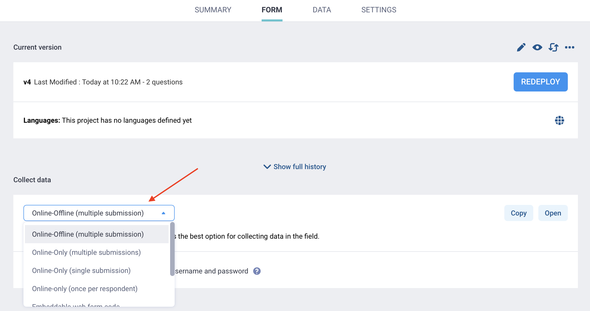

Parcourez la base de connaissances, explorez nos ressources et visitez notre Forum communautaire pour des informations plus détaillées
Dernière mise à jour : 6 mai 2026
Les formulaires web KoboToolbox vous permettent de collecter des données directement dans un navigateur web, sans installer d’application. Ce sont des versions de votre formulaire accessibles depuis un navigateur, que vous pouvez utiliser pour prévisualiser et tester votre questionnaire, ou pour collecter des données réelles sur des téléphones, tablettes et ordinateurs.
Les formulaires web fonctionnent sur la plupart des appareils modernes, notamment les appareils Android, les iPhones, les iPads, les ordinateurs portables et les ordinateurs de bureau. Ils sont particulièrement utiles dans les projets où les répondants remplissent un formulaire via un lien partagé, où l’équipe de collecte de données utilise différents types d’appareils, ou lorsque vous souhaitez saisir des données sur un ordinateur plutôt que via une application.
Les formulaires web permettent également la collecte de données hors ligne une fois le formulaire ouvert et mis en cache dans le navigateur. Ils intègrent toute la logique de formulaire configurée dans KoboToolbox, notamment la logique de saut et les critères de validation, et leur apparence peut être personnalisée grâce à différents thèmes de formulaires web.
Note : Les formulaires web KoboToolbox étaient auparavant propulsés par Enketo, c'est pourquoi ils étaient appelés « formulaires web Enketo » dans les anciennes documentations.
Cet article couvre les points suivants :
Partager des formulaires web KoboToolbox pour la collecte de données
Choisir le bon mode de formulaire web
Collecter des données et enregistrer des brouillons dans le navigateur
Utiliser les formulaires web hors ligne
Personnaliser les liens de formulaires web pour des cas d’utilisation spécifiques
Résoudre les problèmes courants
Une fois votre projet prêt pour la collecte de données, vous pouvez facilement partager un lien avec les répondants ou les enquêteurs pour la saisie des données.
Pour partager un lien avec des répondants :
Ouvrez la page FORMULAIRE et assurez-vous que votre formulaire a été déployé.
Dans la section Collection de données, cliquez sur COPIER pour copier le lien et le partager avec les enquêteurs ou les répondants.
Vous pouvez également cliquer sur OUVRIR pour lancer le formulaire dans un nouvel onglet du navigateur.

Par défaut, les projets déployés exigent que les utilisateurs se connectent avant de pouvoir ouvrir un formulaire web ou soumettre des données.
Pour maintenir l’authentification obligatoire, partagez le projet avec des utilisateurs KoboToolbox spécifiques et accordez-leur la permission Ajouter des soumissions.
Pour permettre à toute personne disposant du lien de soumettre des données sans nom d’utilisateur ni mot de passe, vous pouvez désactiver l’exigence d’authentification dans la section Collection de données en activant l’option « Autoriser les soumissions sans nom d’utilisateur ni mot de passe pour ce formulaire ».
Pour en savoir plus sur les droits d'accès au partage de formulaires, consultez les articles Droits d'accès au niveau du projet et Droits d'accès au niveau de l'utilisateur.
KoboToolbox propose plusieurs options de liens de formulaires web dans la section Collection de données. Ces options affectent le lien que vous ouvrez ou partagez, mais ne modifient pas le formulaire lui-même.

Les modes de formulaires web disponibles sont les suivants :
Mode de collecte de données |
Description |
|---|---|
Online-Offline (soumissions multiples) |
Permet la collecte de données en ligne ou hors ligne et prend en charge plusieurs soumissions depuis le même appareil. |
En ligne seulement (soumissions multiples) |
Prend en charge plusieurs soumissions depuis le même appareil, mais nécessite une connexion internet. |
En ligne seulement (une soumission) |
Permet une soumission à la fois depuis le même appareil et peut être utilisé avec un lien de redirection après la soumission. Les utilisateurs ne sont pas empêchés de rouvrir le lien pour soumettre à nouveau des données. |
En ligne uniquement (une soumission autorisée par répondant) |
Empêche le même utilisateur sur le même navigateur et le même appareil de soumettre plus d’une fois. |
Code de formulaire web |
Fournit un code HTML pour intégrer le formulaire sur votre propre site web. |
Afficher seulement |
Ouvre le formulaire pour la prévisualisation et les tests sans autoriser les soumissions. |
Vous pouvez également imprimer un formulaire web pour le partager lors du développement du formulaire ou l’utiliser pour la collecte de données sur papier. Pour ce faire :
Ouvrez votre formulaire web.
Cliquez sur le bouton d’impression en haut à droite.
La version imprimée inclut toutes les questions et les instructions supplémentaires (guidance hints), quelle que soit la logique de formulaire configurée.

Après avoir ouvert le formulaire, les utilisateurs peuvent le remplir directement dans leur navigateur. Si le formulaire comprend plusieurs langues, les utilisateurs peuvent changer la langue en haut du formulaire.

À la fin du formulaire, les utilisateurs peuvent soit enregistrer leur travail comme brouillon, soit le soumettre :
Envoyer finalise la soumission et l’envoie au serveur lorsqu’une connexion est disponible. Une fois soumise, la saisie ne peut plus être modifiée dans le navigateur.
Sauvegarder le brouillon stocke la soumission sur l’appareil afin qu’elle puisse être rouverte et complétée ultérieurement.

Enregistrer un brouillon stocke la soumission dans le navigateur afin qu’elle puisse être rouverte et complétée ultérieurement. Les brouillons ne sont pas envoyés au serveur KoboToolbox tant qu’ils ne sont pas rouverts, finalisés et soumis.
Lorsque vous enregistrez un formulaire comme brouillon, il vous sera demandé de lui donner un nom pour le retrouver plus facilement.
Le compteur de file d’attente en haut à gauche indique le nombre de brouillons enregistrés dans le navigateur. Pour rouvrir un brouillon :
Cliquez sur le compteur de file d’attente pour ouvrir la liste des brouillons enregistrés.
Sélectionnez le brouillon que vous souhaitez ouvrir.
Vérifiez ou modifiez le brouillon, puis soumettez-le.

Note : Les brouillons sont stockés dans le navigateur jusqu'à leur soumission, même si vous fermez le navigateur, éteignez l'appareil ou vous déconnectez d'internet. Ne videz pas le cache de votre navigateur ni les données du site pendant la collecte de données, et assurez-vous que l'appareil n'est pas configuré pour les effacer automatiquement, car cela pourrait supprimer définitivement les brouillons enregistrés.
Les formulaires web permettent la collecte de données hors ligne sur tous les navigateurs et appareils couramment utilisés. Lors de l’utilisation de formulaires web, KoboToolbox peut stocker le formulaire et les réponses dans le navigateur afin que les utilisateurs puissent continuer à saisir des données sans connexion internet.
Note : Lors de la saisie de données hors ligne, ne videz pas le cache de votre navigateur ni les données du site pendant la collecte de données, et assurez-vous que l'appareil n'est pas configuré pour les effacer automatiquement, car cela pourrait supprimer définitivement les formulaires hors ligne et les soumissions en file d'attente.
Pour collecter des données hors ligne avec des formulaires web :
Avant de vous déconnecter d’internet, ouvrez le formulaire en étant connecté et attendez qu’il soit entièrement chargé et mis en cache sur l’appareil. Cela peut prendre jusqu’à 30 secondes.
Une fois le formulaire mis en cache, une icône de confirmation apparaît en haut à gauche pour indiquer qu’il peut désormais être utilisé hors ligne.
Si vous vous déconnectez d’internet avant que le formulaire ait été mis en cache, vous risquez de perdre l’accès à la page lors de son actualisation.

Lors de la soumission de données hors ligne, les soumissions sont ajoutées à la file d’attente. Le compteur de file d’attente indique le nombre de saisies en attente d’envoi.
Cliquez sur le compteur de file d’attente pour afficher les soumissions finalisées en attente d’envoi lorsqu’une connexion internet sera disponible. Vous pouvez également exporter les soumissions en file d’attente sous forme de fichier ZIP.
Une fois l’appareil reconnecté, les soumissions enregistrées sont envoyées automatiquement en arrière-plan pendant que le formulaire reste ouvert.
Note : Pour un accès plus facile pendant la collecte de données hors ligne, vous pouvez mettre le formulaire en favori ou ajouter un raccourci sur l'écran d'accueil de votre téléphone via l'option Ajouter à l'écran d'accueil dans le menu de votre navigateur.
Vous pouvez modifier un lien de formulaire web pour contrôler la façon dont le formulaire s’ouvre ou se comporte pour différents utilisateurs et cas d’utilisation. Par exemple, vous pouvez ouvrir le formulaire dans une langue spécifique, préremplir certaines valeurs ou rediriger les utilisateurs vers une autre page après la soumission du formulaire.
Si votre formulaire est disponible en plusieurs langues, vous pouvez ajouter un paramètre de langue à l’URL du formulaire web afin qu’il s’ouvre dans une langue spécifique. Cela peut être utile lorsque vous partagez différents liens avec différents groupes d’utilisateurs.
Pour partager un lien qui ouvre le formulaire dans une langue différente de la langue par défaut :
Copiez votre lien de formulaire dans FORMULAIRE > Collection de données.
Ajoutez ?lang=code_langue à la fin de l’URL, où code_langue est le code de la langue sélectionnée.
Par exemple : https://ee.kobotoolbox.org/x/[form_id]?lang=fr.
Pour plus d'informations, consultez l'article Collecter des données dans plusieurs langues.
Vous pouvez également préremplir un champ de votre formulaire via le lien web. Cela est utile lorsque vous souhaitez transmettre automatiquement une valeur connue dans le formulaire.
Par exemple, vous pourriez partager différents liens à différents endroits, et chaque lien pourrait ouvrir le même formulaire avec un champ caché indiquant la provenance du lien. Vous pourriez également partager un lien différent avec chaque répondant, avec l’identifiant unique de cette personne déjà intégré dans le lien.
Pour partager un lien qui préremplie un champ de votre formulaire :
Ajoutez la question que vous souhaitez préremplir à votre formulaire, puis définissez son nom du champ.
Il peut s’agir d’une question de type Caché si vous souhaitez stocker la valeur en arrière-plan, ou de tout type de question standard si vous souhaitez que les répondants la voient dans le formulaire.
Copiez votre lien de formulaire dans FORMULAIRE > Collection de données.
Ajoutez ?d[nom_du_champ]=valeur à la fin de l’URL, où nom_du_champ est le nom du champ de la question Caché et valeur est la valeur préremplie.
Par exemple : https://ee.kobotoolbox.org/x/[form_id]?d[champ_prerempli]=12345.
Note :
Utilisez le nom du champ complet dans le paramètre d'URL. Si la question se trouve dans un ou plusieurs groupes, le nom doit également inclure le ou les noms de groupe (par exemple, groupe1/question1). Vous pouvez trouver le nom exact dans le champ Nom du champ de la question dans l'interface de création de formulaires KoboToolbox (KoboToolbox Formbuilder), ou dans la colonne name d'un XLSForm.
Lorsque vous utilisez le mode de collecte de données En ligne seulement (une soumission), vous pouvez rediriger les utilisateurs vers une autre page web après la soumission de leur formulaire.
Pour rediriger les utilisateurs vers une autre page web :
Dans FORMULAIRE > Collection de données, sélectionnez le mode de collecte de données En ligne seulement (une soumission).
Copiez votre lien de formulaire.
Ajoutez ?return_url=page_web à la fin de l’URL, où page_web est l’URL de la page web.
Par exemple : https://ee.kobotoolbox.org/x/[form_id]?return_url=https://website.com.
Note :
Vous pouvez combiner plusieurs paramètres dans le même lien en les séparant par &.
Pour résoudre le problème, renommez la question concernée avec une valeur différente, puis redéployez le formulaire. Ce problème affecte généralement les formulaires web même lorsque le formulaire s’ouvre normalement, tandis que KoboCollect peut continuer à fonctionner normalement. Notez que les soumissions déjà enregistrées avec l’ancienne version du formulaire peuvent rester non soumettables. Il est donc important de mettre à jour le formulaire dès que possible si vous collectez des données via des formulaires web. Testez toujours la soumission du formulaire avant de lancer la collecte de données afin de détecter les problèmes de nommage le plus tôt possible.
Avez-vous trouvé ce que vous cherchiez ? La traduction était-elle claire ? Manquait-il quelque chose ?
Partagez vos commentaires pour nous aider à améliorer cet article !